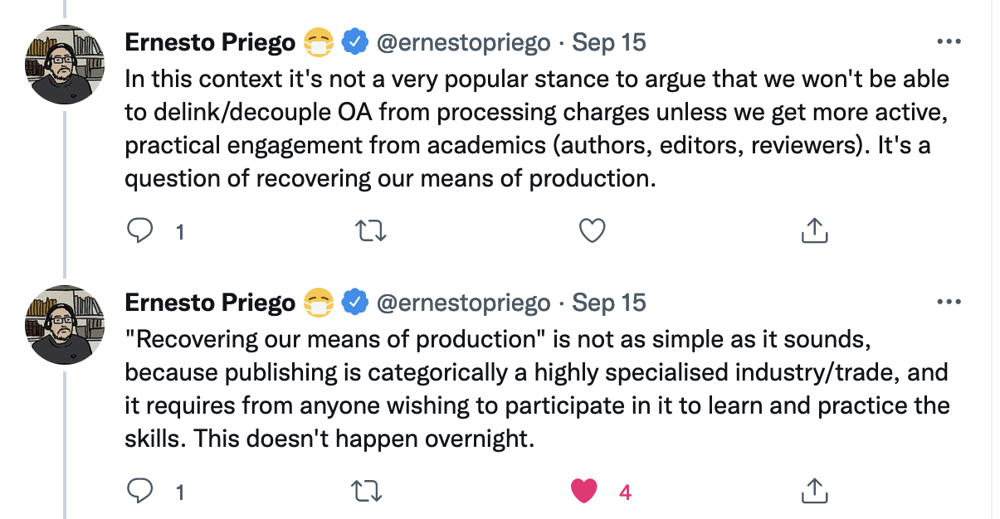

<!DOCTYPE html>
<html lang="en">
  <head>
    <meta charset="utf-8" />
    <meta name="viewport" content="width=device-width, initial-scale=1.0, maximum-scale=1.0, user-scalable=no" />

    <title></title>
    <link rel="stylesheet" href="dist/reveal.css" />
    <link rel="stylesheet" href="dist/theme/night.css" id="theme" />
    <link rel="stylesheet" href="plugin/highlight/zenburn.css" />
	<link rel="stylesheet" href="css/layout.css" />
	<link rel="stylesheet" href="plugin/customcontrols/style.css">


    <script defer src="dist/fontawesome/all.min.js"></script>

	<script type="text/javascript">
		var forgetPop = true;
		function onPopState(event) {
			if(forgetPop){
				forgetPop = false;
			} else {
				parent.postMessage(event.target.location.href, "app://obsidian.md");
			}
        }
		window.onpopstate = onPopState;
		window.onmessage = event => {
			if(event.data == "reload"){
				window.document.location.reload();
			}
			forgetPop = true;
		}

		function fitElements(){
			const itemsToFit = document.getElementsByClassName('fitText');
			for (const item in itemsToFit) {
				if (Object.hasOwnProperty.call(itemsToFit, item)) {
					var element = itemsToFit[item];
					fitElement(element,1, 1000);
					element.classList.remove('fitText');
				}
			}
		}

		function fitElement(element, start, end){

			let size = (end + start) / 2;
			element.style.fontSize = `${size}px`;

			if(Math.abs(start - end) < 1){
				while(element.scrollHeight > element.offsetHeight){
					size--;
					element.style.fontSize = `${size}px`;
				}
				return;
			}

			if(element.scrollHeight > element.offsetHeight){
				fitElement(element, start, size);
			} else {
				fitElement(element, size, end);
			}		
		}


		document.onreadystatechange = () => {
			fitElements();
			if (document.readyState === 'complete') {
				if (window.location.href.indexOf("?export") != -1){
					parent.postMessage(event.target.location.href, "app://obsidian.md");
				}
				if (window.location.href.indexOf("print-pdf") != -1){
					let stateCheck = setInterval(() => {
						clearInterval(stateCheck);
						window.print();
					}, 250);
				}
			}
	};


        </script>
  </head>
  <body>
    <div class="reveal">
      <div class="slides"><section  data-markdown><script type="text/template">

<!-- .slide: data-background-opacity="0.5" data-background-size="contain" data-background-image="https://epoiesen.carleton.ca/imgs/Signature_Nikosthenes_F102.jpg" -->

<div align="left">

### Making Epoiesen

#### How Hard Could It *Really* Be?
#### _or, the adventures of a digital publishing neophyte_

</div>
</script></section><section  data-markdown><script type="text/template">
<!-- .slide: class="drop" data-background-opacity="0.5" data-background-size="contain" data-background-image="slideshows/potter.png" -->

<div class="reset-margin" style="padding: 20px; box-sizing: border-box; position: absolute; left: 480px; top: 525px; height: 175px; min-height: 175px; width: 480px; display: flex; flex-direction: column; align-items: center; justify-content: space-evenly" >

<div align="right">
ἐποίησεν

/e.pǒi̯.ɛː.sen/ <br>
third-person singular aorist active indicative of _[ποιέω](https://en.wiktionary.org/wiki/%CF%80%CE%BF%CE%B9%CE%AD%CF%89#Ancient_Greek "ποιέω")_
</div></div>

<aside class="notes"><p>Making Epoiesen: How hard could it <em>really</em> be to set up an open access online born-digital journal, <em>anyway</em>?</p>
<p>&#39;made&#39; -&gt; created, produced, postulated, solved, wrote, composed, invented, caused, procured, celebrated, considered, prepared, played, acted, pretended...</p>
<p>Look, my ancient Greek is pretty rusty. But the word covers a lot of territory. Greek is handy like that.</p>
</aside></script></section><section  data-markdown><script type="text/template">
<!-- .slide: class="drop" data-background-opacity="0.75" data-background-size="contain" data-background-image="slideshows/salt.png" -->

<div class="reset-margin" style="padding: 20px; box-sizing: border-box; position: absolute; left: 480px; top: 525px; height: 175px; min-height: 175px; width: 480px; display: flex; flex-direction: column; align-items: center; justify-content: space-evenly" >

<div align="right">
Warning: <br>
Grains of Salt Needed</div>
</div>

<aside class="notes"><p>Undergradute Essay On A &#39;Webography&#39; from AltaVista, ca 1995</p>
</aside></script></section><section  data-markdown><script type="text/template">

<!-- .slide: data-background-opacity="0.5" data-background-size="contain" data-background-image="https://hist3812.netlify.app/slides/bluebricks.png" -->

## Structure for today

- &shy;<!-- .element: class="fragment" data-fragment-index="1" -->Part 1: Where I'm Coming From
- &shy;<!-- .element: class="fragment" data-fragment-index="2" -->Part 2: Where I Got To and Why I Needed to Tell You All That
- &shy;<!-- .element: class="fragment" data-fragment-index="3" -->Part 3: Calvinball for Academics

</script></section><section  data-markdown><script type="text/template">
<!-- .slide: data-background-opacity="0.75" data-background-size="contain" data-background-image="slideshows/forest-road.png" -->

## Part One
</script></section><section  data-markdown><script type="text/template">
<!-- .slide: class="drop" data-background-opacity="0.5" data-background-size="contain" data-background-image="slideshows/c64.png" -->

<split even gap="3">
<p style="line-height: 0" class="reset-paragraph image-paragraph"></img></p>


<br><Br>In The Beginning... there was the Commodore 64

</split>

<div class="reset-margin" style="padding: 20px; box-sizing: border-box; position: absolute; left: 480px; top: 525px; height: 175px; min-height: 175px; width: 480px; display: flex; flex-direction: column; align-items: center; justify-content: space-evenly" >

<div align="right">
The JailBird Press - 1986, 4 weeks<br> S Graham Editor Publisher Writer Sales Marketing Programming
</div></div>


<aside class="notes"><p>jailbird press&#39; - grade six, broderbund printshop
    - vic 20, c64, brother&#39;s history quiz for open house, my internalization of &#39;proper&#39; scholarship, web will never be useful, eating of crow
    - Grad School - Netscape Maybe? Another Stab At A Popular Magazine For Archaeology
    - 2 weeks, 2001-ish</p>
</aside></script></section><section  data-markdown><script type="text/template">
(this slide intentionally blank)

<aside class="notes"><p>ok, so 15 years apart does not constitute a trend, but looking back, I can see there&#39;s something in me that clearly wanted to be putting stuff out there. Question is, <strong>how</strong>? How do you do this? Especially when you&#39;re the guy who could write &#39;the so-called web will never be of use to academics?&#39;</p>
</aside></script></section><section  data-markdown><script type="text/template">
<!-- .slide: class="drop" data-background-opacity="0.5" data-background-size="contain" data-background-image="slideshows/for-hire.png" -->

<div class="reset-margin" style="padding: 20px; box-sizing: border-box; position: absolute; left: 480px; top: 525px; height: 175px; min-height: 175px; width: 480px; display: flex; flex-direction: column; align-items: center; justify-content: space-evenly" >

<div align="right">

## Part Two - Where I Got To

</div></div>

<aside class="notes"><p>Unemployed, for the most part.</p>
</aside></script></section><section  data-markdown><script type="text/template">
<!-- .slide: class="drop" data-background-size="contain" data-background-image="https://upload.wikimedia.org/wikipedia/commons/thumb/d/da/Brique_avec_marque_de_fabrique_de_Domitius_Afer_MBALyon_2018.jpg/1920px-Brique_avec_marque_de_fabrique_de_Domitius_Afer_MBALyon_2018.jpg?20190103135137" -->

<div class="reset-margin" style="padding: 20px; box-sizing: border-box; position: absolute; left: 0px; top: 525px; height: 175px; min-height: 175px; width: 480px; display: flex; flex-direction: column; align-items: center; justify-content: space-evenly" >

<div align="left">
Ottawa's Only Expert In Stamped Roman Bricks 
</div></div>

<aside class="notes"><p>Taught High School for a while. Got in trouble for not sticking to word processing and spreadsheets in my computer class.</p>
</aside></script></section><section  data-markdown><script type="text/template">
<!-- .slide: data-background-size="contain" data-background-image="slideshows/dog.png" -->

<aside class="notes"><p>In 2010, Blogging + a bit of ABM = DH enough for a job! imposter syndrome: high</p>
</aside></script></section><section  data-markdown><script type="text/template">
The Death and Afterlife of HeritageCrowd

<p style="line-height: 0" class="reset-paragraph image-paragraph"></img></p>


<small>Github user [Fmilitao](https://github.com/fmilitao/dead-parrot)</small>

<aside class="notes"><p>what the hell is DH anyway</p>
</aside></script></section><section  data-markdown><script type="text/template">
Where does a dead project go on your annual report?
</script></section><section  data-markdown><script type="text/template">
<!-- .slide: class="drop" data-background-opacity="0.5" data-background-size="contain" data-background-image="slideshows/dog-on-bench.png" -->

<div class="reset-margin" style="padding: 20px; box-sizing: border-box; position: absolute; left: 0px; top: 350px; height: 350px; min-height: 350px; width: 480px; display: flex; flex-direction: column; align-items: center; justify-content: space-evenly" >

<div align="left" >
I believe I have now established my credentials, ie: <Br><BR>

I do not know what I am doing at any given point in time.<br><Br>

**Being a white guy on the internet: the privilege of screwing up in public.**<Br><Br>
</div></div>


<aside class="notes"><p>lessons here? blogging techs, diy...
also: i&#39;m clearly interested in getting ideas out there, I do weird things, and I&#39;ve got no skin in the game so what the hell, might as well try something, right? student blogging on eve of gamergate - dangerous - had to learn important caveat: white guy on the internet... lessons on death of heritagecrowd: i can take the hit, and should try to make it safe for others to admit something went wrong and</p>
</aside></script></section><section  data-markdown><script type="text/template">
## Part Three. Calvinball for Academics 

<p style="line-height: 0" class="reset-paragraph image-paragraph"></img></p>

</script></section><section  data-markdown><script type="text/template">
<p style="line-height: 0" class="reset-paragraph image-paragraph"></img></p>


<aside class="notes"><p>&quot;Calvinball has no rules; the players make up their own rules as they go along, so that no Calvinball game is like another.&quot; - <a href="https://calvinandhobbes.fandom.com/wiki/Calvinball">The Calvin and Hobbes Wiki</a></p>
</aside></script></section><section  data-markdown><script type="text/template">
What are the rules _for students?_

- write the midterm
- write the essay for an audience of 0
- write the final
- rinse, repeat

<aside class="notes"><p>what we teach our students is what we do ourselves</p>
</aside></script></section><section  data-markdown><script type="text/template">
What are the rules for academics?
- do your research
- write intro / lit / method / results / discussion / conclusion
- submit to journals with high impact
- placate Reviewer 2
- rinse, repeat; sometimes publish
</script></section><section  data-markdown><script type="text/template">
What are the rules?, cont.

- sign away your copyright
- let your institution buy your research back
- rinse, repeat
</script></section><section  data-markdown><script type="text/template">
This is not a fun game.

<aside class="notes"><p>reading is like the way some people &#39;listen&#39; - a break for long enough to think of the next thing they&#39;re going to listen. We produce lots of data, but little wisdom.</p>
</aside></script></section><section  data-markdown><script type="text/template">
<!-- .slide: class="drop" background-opacity="0.5=" true" data-background-size="contain" data-background-image="http://www.forvm.ca/img/header.jpg" -->

<div class="reset-margin" style="padding: 20px; box-sizing: border-box; position: absolute; left: 480px; top: 0px; height: 350px; min-height: 350px; width: 480px; display: flex; flex-direction: column; align-items: center; justify-content: space-evenly" >

<div align="left" >

## What do games teach?

</div></div>

<aside class="notes"><p>first sabbatical and how we ended up making a board game: and my irritation with where I had to put it on my annual report.</p>
<p>games teach nothing but how to play the game; games can stand in for all interactive tech, which i take to mean any and all tech that responds to you somehow (and that includes just watching you). change the rules.</p>
<p> you <em>can</em> make up the rules as you go along! like Calvinball, you can change &#39;em as you go!</p>
<ul>
<li>provided you&#39;re a white guy on the internet</li>
</ul>
</aside></script></section><section  data-markdown><script type="text/template">
yes, yes, OA and Gold OA and Green OA and Janeway and Open Library of the Humanities and OJS/PKP and Pressbooks and... and... and....

<aside class="notes"><p>In the year 2022, is this <em>it?</em> skeuomorphic pictures of printed pages?</p>
</aside></script></section><section  data-markdown><script type="text/template">
<!-- .slide: class="drop" background-opacity="0.5=" true" data-background-size="contain" data-background-image="slideshows/ruined-church.png" -->

<div class="reset-margin" style="padding: 20px; box-sizing: border-box; position: absolute; left: 0px; top: 525px; height: 175px; min-height: 175px; width: 480px; display: flex; flex-direction: column; align-items: center; justify-content: space-evenly" >

<div align="left">
Enchantment?
</div></div>

<aside class="notes"><p>what enchantment would do for scholarship; a subjunctive mood; in archaeology, it can be the eruption of the deep past into the present, the uncanny. </p>
<p><em>enchantment is a sense of openness to the unusual, the captivating, and the disturbing in everyday life</em>.</p>
<p>I wanted more than results. The process of scholarship is enchanting. I wanted that process</p>
</aside></script></section><section  data-markdown><script type="text/template"><!-- .slide: data-background-opacity="0.5" data-background-size="contain" data-background-image="https://hist3812.netlify.app/slides/bluebricks.png" -->

But I don't want to publish pdfs that mimic pieces of paper to read on a brightly lit screen on a device capable of doing _damned near anything_
<Br><Br>
I mean, seems like a lack of imagination, doesn't it? I mean, it's just Broderbund Print Shop with sharper fonts, isn't it?

<aside class="notes"><p>Pratchett says “Around the Godde there forms a Shelle of prayers and Ceremonies and Buildings and Priestes and Authority, until at Last the Godde Dies. Ande this maye notte be noticed.”<br>― Terry Pratchett, <a href="https://www.goodreads.com/work/quotes/1636629">Small Gods</a> What&#39;s our god, here? We have this whole rotten carapace around our mission, which is to find things out and tell people about it, right? Elsevier and its ilk mine us and sell our data to police, for god&#39;s sake.</p>
</aside></script></section><section  data-markdown><script type="text/template"><!-- .slide: data-background-opacity="0.5" data-background-size="contain" data-background-image="https://hist3812.netlify.app/slides/bluebricks.png" -->

I wanted:
- &shy;<!-- .element: class="fragment" data-fragment-index="1" -->a place that could publish the scholarly thinking behind making a board game, a video game, an art installation, a photo essay, a poem, a play
- &shy;<!-- .element: class="fragment" data-fragment-index="2" -->a place where we could take advantage of these, y'know, computer things
- &shy;<!-- .element: class="fragment" data-fragment-index="3" -->a place where conversations started
- &shy;<!-- .element: class="fragment" data-fragment-index="4" -->bollox to gatekeeping
- &shy;<!-- .element: class="fragment" data-fragment-index="5" -->something that I could technically support

<aside class="notes"><p>how much of the IA model can I use, follow?</p>
</aside></script></section><section  data-markdown><script type="text/template">
<p style="line-height: 0" class="reset-paragraph image-paragraph"></img></p>


Internet Archaeology - 1996 Onwards
[intarch.ac.uk](https://intarch.ac.uk)

- HTML for the static web pages.
- Coldfusion for the dynamic web pages.
- An Oracle database is used to store the data for the dynamic web pages.
- Everything is hosted on a Ubuntu Linux server.

<aside class="notes"><p>serious journal, but doesn&#39;t try to underline it&#39;s seriousness by killing expression into straightjackets. But all of this costs money. APC directly tied to cost (unlike Elsevier etc)</p>
</aside></script></section><section  data-markdown><script type="text/template">
<!-- .slide: class="drop" background-opacity="0.25=" true" data-background-size="contain" data-background-image="slideshows/empty-wallet.png" -->

<div class="reset-margin" style="padding: 20px; box-sizing: border-box; position: absolute; left: 480px; top: 525px; height: 175px; min-height: 175px; width: 480px; display: flex; flex-direction: column; align-items: center; justify-content: space-evenly" >

<div align="right">
Current Budget: $0
(that's in Canadian dollars)

</div></div>

<aside class="notes"><p>but all that costs money. And a lot of that is beyond my ability to support.</p>
</aside></script></section><section  data-markdown><script type="text/template">
<!-- .slide: data-background-opacity="0.5" data-background-size="contain" data-background-image="https://epoiesen.carleton.ca/imgs/Signature_Nikosthenes_F102.jpg" -->

rules E tries to break: 

- peer review
- what counts as scholarship
- FU to relx, google, etc: no tracking
- only formal academics can publish in an academic journal
- sensible financial planning
</script></section><section  data-markdown><script type="text/template"><!-- .slide: data-background-opacity="0.5" data-background-size="contain" data-background-image="https://epoiesen.carleton.ca/imgs/Signature_Nikosthenes_F102.jpg" -->
E so far: 

- &shy;<!-- .element: class="fragment" data-fragment-index="1" -->50- &shy;<!-- .element: class="fragment" -->articles
- &shy;<!-- .element: class="fragment" data-fragment-index="2" -->basic markdown pumped through Hexo template
- &shy;<!-- .element: class="fragment" data-fragment-index="3" -->template equipped with Hypothesis
- &shy;<!-- .element: class="fragment" data-fragment-index="4" -->source md kept in a Github repo
- &shy;<!-- .element: class="fragment" data-fragment-index="5" -->authors from undergrad to grad to faculty to alt-ac to ordinary folks
- &shy;<!-- .element: class="fragment" data-fragment-index="6" -->paper version for that authentic smell
- &shy;<!-- .element: class="fragment" data-fragment-index="7" -->now on compute canada (new name) infrastructure
- &shy;<!-- .element: class="fragment" data-fragment-index="8" -->no APCs, but [will gladly accept tips](https://futurefunder.carleton.ca/giving-fund/epoiesen-a-journal-for-creative-engagement-in-history-and-archaeology/)
</script></section><section  data-markdown><script type="text/template"><!-- .slide: data-background-opacity="0.5" data-background-size="contain" data-background-image="https://epoiesen.carleton.ca/imgs/Signature_Nikosthenes_F102.jpg" -->

Fails

- &shy;<!-- .element: class="fragment" data-fragment-index="1" -->long term preservation
- &shy;<!-- .element: class="fragment" data-fragment-index="2" -->still largely a one man band
- &shy;<!-- .element: class="fragment" data-fragment-index="3" -->friggin' hard to be consistent, could use a copy editor. and a programmer. and a designer.
- &shy;<!-- .element: class="fragment" data-fragment-index="4" -->more Respondents would be nice
</script></section><section  data-markdown><script type="text/template">
<div class="reset-margin" style="position: absolute; left: 288px; top: 0px; height: 700px; min-height: 700px; width: 384px; display: flex; flex-direction: column; align-items: center; justify-content: space-evenly" >

<p style="line-height: 0" class="reset-paragraph image-paragraph"></img></p>

<p style="line-height: 0" class="reset-paragraph image-paragraph"></img></p>

<p style="line-height: 0" class="reset-paragraph image-paragraph"></img></p>

</div>


<!-- .slide: class="drop" -->
</script></section><section  data-markdown><script type="text/template">
## Be The CalvinBall You Want To See In The World

<p style="line-height: 0" class="reset-paragraph image-paragraph"></img></p>

</script></section><section  data-markdown><script type="text/template">images

salt: Jason Tuinstra https://unsplash.com/photos/4OfaTz6SdYs
potter: Dainel Lloyd Blunk-Fernández https://unsplash.com/photos/81qzRJYOrPw
c64: Alexander Grigoryev https://unsplash.com/photos/YSEp8dLK8K8
forest road: Steven Pahel https://unsplash.com/photos/7IOcBt29C2w
for hire: Matt Noble https://unsplash.com/photos/VpGAhrqRAsw
</script></section><section  data-markdown><script type="text/template">images

stamped brick: Photo Xavier Caré [wikimedia](https://commons.wikimedia.org/wiki/File:Brique_avec_marque_de_fabrique_de_Domitius_Afer_MBALyon_2018.jpg#/media/File:Brique_avec_marque_de_fabrique_de_Domitius_Afer_MBALyon_2018.jpg) CC BY-SA 4.0
dog: Braydon Anderson https://unsplash.com/photos/wOHH-NUTvVc
dog on bench: Ferdinand Stöhr https://unsplash.com/photos/MDUlQjaAr0E
ruined church: Kiwi Thompson https://unsplash.com/photos/KeAa-GZC6_I</script></section></div>
    </div>

    <script src="dist/reveal.js"></script>

    <script src="plugin/markdown/markdown.js"></script>
    <script src="plugin/highlight/highlight.js"></script>
    <script src="plugin/zoom/zoom.js"></script>
    <script src="plugin/notes/notes.js"></script>
    <script src="plugin/math/math.js"></script>
	<script src="plugin/mermaid/mermaid.js"></script>
	<script src="plugin/chart/chart.min.js"></script>
	<script src="plugin/chart/plugin.js"></script>
	<script src="plugin/menu/menu.js"></script>
	<script src="plugin/customcontrols/plugin.js"></script>

    <script>
      function extend() {
        var target = {};
        for (var i = 0; i < arguments.length; i++) {
          var source = arguments[i];
          for (var key in source) {
            if (source.hasOwnProperty(key)) {
              target[key] = source[key];
            }
          }
        }
        return target;
      }

	  function isLight(color) {
		let hex = color.replace('#', '');

		// convert #fff => #ffffff
		if(hex.length == 3){
			hex = `${hex[0]}${hex[0]}${hex[1]}${hex[1]}${hex[2]}${hex[2]}`;
		}

		const c_r = parseInt(hex.substr(0, 2), 16);
		const c_g = parseInt(hex.substr(2, 2), 16);
		const c_b = parseInt(hex.substr(4, 2), 16);
		const brightness = ((c_r * 299) + (c_g * 587) + (c_b * 114)) / 1000;
		return brightness > 155;
	}

	var bgColor = getComputedStyle(document.documentElement).getPropertyValue('--r-background-color').trim();

	if(isLight(bgColor)){
		document.body.classList.add('has-light-background');
	} else {
		document.body.classList.add('has-dark-background');
	}

      // default options to init reveal.js
      var defaultOptions = {
        controls: true,
        progress: true,
        history: true,
        center: true,
        transition: 'default', // none/fade/slide/convex/concave/zoom
        plugins: [
          RevealMarkdown,
          RevealHighlight,
          RevealZoom,
          RevealNotes,
          RevealMath.MathJax3,
		  RevealMermaid,
		  RevealChart,
		  RevealCustomControls,
		  RevealMenu,
        ],

		mathjax3: {
			mathjax: 'plugin/math/mathjax/tex-mml-chtml.js',
		},

		customcontrols: {
			controls: [
				{id: 'toggle-overview',
				title: 'Toggle overview (O)',
				icon: '<i class="fa fa-th"></i>',
				action: 'Reveal.toggleOverview();'
				},
			]
		},
		menu: {
			loadIcons: false
		}
      };

      // options from URL query string
      var queryOptions = Reveal().getQueryHash() || {};

      var options = extend(defaultOptions, {"width":960,"height":700,"margin":0.04,"controls":true,"progress":true,"slideNumber":true,"transition":"slide","transitionSpeed":"default"}, queryOptions);
    </script>

    <script>
      Reveal.initialize(options);
    </script>
  </body>
</html>
